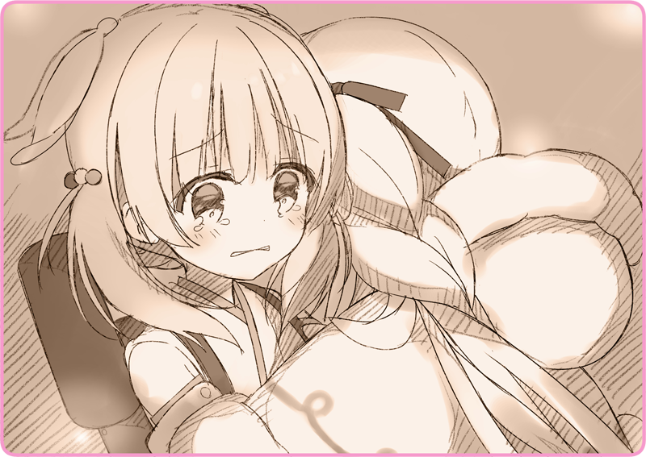

ランドセルの中身が空っぽになるまで、さほど時間はかからなかった。
二人は近くの展望台へと移動した。小高い丘の上にはベンチがいくつか置かれている。遠くに総主教会の荘厳たる様子が見えた。
「そうね、よく売れたわね」
「別に、あんなの大した……」
「………そう」
灰桜は無垢な瞳でそう言ってくれる。
無下に否定することもできず、リリアは言葉を濁した。
「余分に持ってきたからあるけれど……どうして？」
「ええ……そうなの？」
「……じゃあ、いただくわ」
灰桜の背中のランドセルから、湯気立つハーブティーを注ぐ。
カップの半分ほどしか残っていなかったけれど、それでも十分だった。
「……おいし」
口をつけると、はちみつとコケモモの優しい甘みが広がっていく。
冷え切った体を、スパイスが中から温めてくれるようだった。
「え？」
「あ、こ、これは……」
無意識のうちに、リリアの頬に涙が伝っていた。
慌てて、手の甲でごしごしと拭う。
「違う、違うの……そうじゃなくてね。なんだか懐かしくて……」
まさか灰桜の前で、こんなにも気持ちが緩むとは思わなかった。
「昔、お母さんがよく作ってくれたなぁって思って……」
いや、一見なにも考えていないようで、でもそっと大切なものに寄り添ってくれる……そんな灰桜の前だから、なのかもしれない。
「うん、もう何年も会ってないけれど……」
「そうだったら、いいんだけど……」
じっとルビー色のカップの中身を見つめる。
「……わたしね、置いていかれたの」
ふと、普段なら絶対に言わないことを口にしてしまう。
灰桜が人形だからなのか、それとも……。
「お母さんはローベリア人なの。アルタリア人のお父さんと結ばれて……それはそれは反対されたそうよ」
「四人の子供に恵まれて……でも、戦争が続くにつれてどんどん迫害されて……だから、子供たちと一緒に、ローベリアに亡命することにしたのよ」
「言ったでしょ、置いていかれたの。お金や手間の問題で……ローベリアにいけるのは四人だけだった。お父さんとお母さん、うえ二人のお兄ちゃん……それで全員」
灰桜は目を見開いて、じっとリリアの話に耳を傾けている。
「妹はまだ二歳だったから、養子にもらわれていったわ。わたしは少女歌劇団に売られることになったの」
「そうなのよ。子供を入団させるとね、謝礼金がもらえるの。きっと亡命の渡航費の一部になったんでしょうね……」
「ちょっと灰桜」
「あなた……人形なのに、どうして泣くのよ」
灰桜は、ぽろぽろと頬に涙を伝わせていた。
それでも、懸命に言葉を続かせようとする。
「違うって、なによ」
「そう……かしら」
「う……」
とめどなく溢れてくる涙。
拭うこともせず、頬を泣き濡らしながら、灰桜は声を上げる。
「ぐすっ……あ、ああ、あああぁあああ……」
そう断言されて、リリアはもう自分を保っていられなかった。
「私だって、会いたいよ！ お母さんとお父さんに会いたい……！ 連れて行きたかったって……言ってほしいよ……！」

小さな体に、ぎゅっと抱きついた。
「うわぁあああああああああ～～～～～～～」
その胸に顔をうずめて、リリアはただ慟哭した。
＊ ＊ ＊
「……ごめんなさいね、灰桜」
涙が止まっても、まだ目蓋は腫れぼったかった。
「ハーブティー、すっかり冷めちゃったわ」
「ううん、いいの……それでもおいしいから」
すっかり冷えたハーブティーで喉を潤す。
火照ってしまった体には、そのひんやりとした温度が心地よかった。
「どうぞって……」
灰桜は真剣な表情で、両手いっぱいのコインの山を差し出してくれる。
「それは……」
こんな小銭がいくらあったところで、船賃の足しにもならないだろう。
「……そうね、ありがとう。とっても助かるわ」
それでも、そのコインを受け取った。
ずっと手のひらでぎゅっとしていたのか、ほかほかと温かかった。
「ねえ、灰桜？」
「灰桜は、なにかしたいことはないの？」
「私がローベリアに行きたいというように……灰桜の望みはないのかなって思って」
いま思い出したというように、笑顔で声を上げた。
「花火？」
「花火は新年の日だけよ、だからあと一年待たないといけないわ」
「その、マスターに言って見せてもらったらどうかしら……？」
「今日、一日中外にいたけれど……」
いま思い出したというように、ぴくんと背筋を伸ばす。
あまりに狼狽えているので、思わず笑ってしまう。
「一緒に帰りましょう。わたしからも説明するから」
「平気よ、きっと」
彼女を安心させたくて、リリアはにっこりと笑顔を向けた。


 「ひい、ふう、みい……」
「ひい、ふう、みい……」